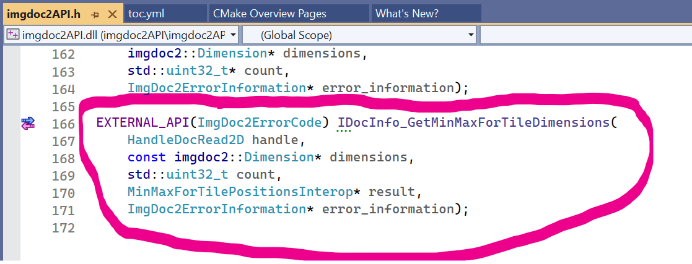
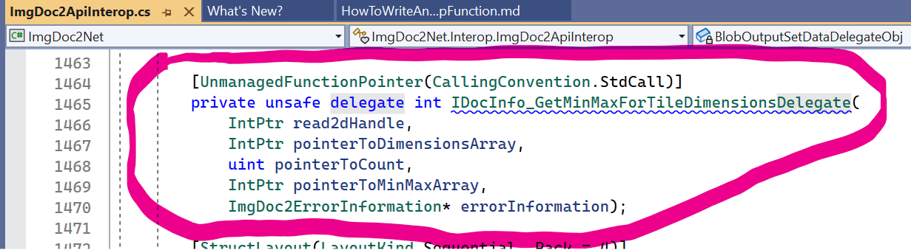
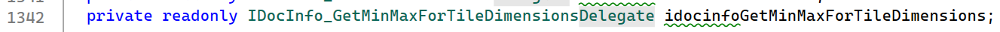
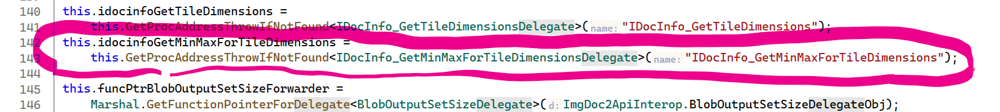

This article is walking through the steps necessary for adding a function to the imgdoc2API-layer and exposing it a the imgdoc2Net-layer.
Add an exported function to the imgdoc2API.h/imgdoc2API.cpp files  An interop-function should follow those patterns:
- it should return an ImgDoc2ErrorCode
- it should take a pointer to an ImgDoc2Error as the last parameter
- all other arguments should either be primitive types or pointers to primitive types, or dedicated interop-structures.
Add a delegate (matching the signature of the function) to the ImageDoc2ApiInterop.cs file. 
Add a field of the delegate type to the class. 
Instantiate an instance of the delegate and assign it to this field in the constructor. 